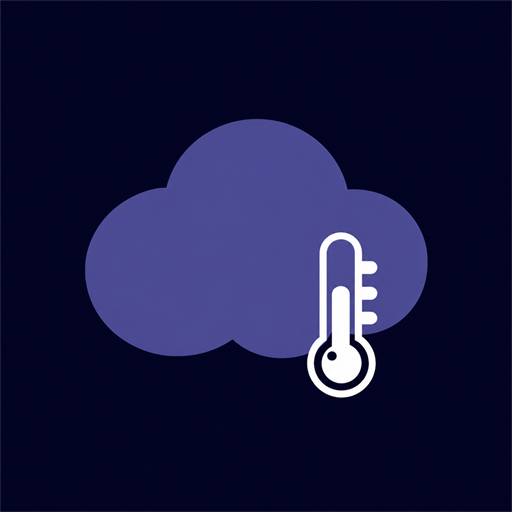

Privacy policy
Selia Vetra · effective 29 August 2026
Selia Vetra, package com.majkeylab.weatheraladin, does not require a developer account. The developer does not sell personal data or run a separate analytics service. The free version integrates Google Mobile Ads and Google User Messaging Platform (UMP). Premium purchases use Google Play Billing.
Data on your device
The app stores the last selected place, favourite places, the last successful forecast, language preference, and widget settings in internal app storage. Clearing app data or uninstalling the app deletes it. Android backup and device transfer are disabled for this data.
A custom widget image remains in its original location. The app stores only its Android content URI and reads a bounded copy when it renders the widget. Removing the widget removes its settings and releases its retained image permission when no other widget uses the URI.
The app checks active Google Play purchases when Billing connects and when the app resumes. Product IDs and purchase state determine whether ads are removed. Purchase tokens are used only to acknowledge purchases through Google Play and are not stored by the developer or sent to a developer server.
Location
Approximate and precise location permissions are optional. After you select Use my location, the app reads coordinates, checks that they are in Czechia, and sends them to Open-Meteo over HTTPS to request a forecast. Android's system Geocoder can also receive the coordinates to name the place. The app does not track location in the background.
Network communication
- Open-Meteo receives place search terms and selected coordinates. It provides geocoding and forecasts. The developer does not retain this data off-device. Open-Meteo states that free API server logs may contain coordinates and are deleted after 90 days.
- ČHMÚ provides public automatic-station observations, radar, nowcast, lightning, and satellite images. The app selects nearby station IDs on the device and does not send the selected coordinates to ČHMÚ. ČHMÚ servers process normal HTTPS technical data such as your IP address and requested public file names.
- Google Mobile Ads automatically collects and shares IP address, app interactions, diagnostic information, and device or account identifiers for advertising, analytics, and fraud prevention. UMP requests consent where required and exposes privacy choices in Settings. Ads remain hidden until consent permits a request and Google Play confirms that Premium is not active.
- Google Play processes product queries, purchases, subscription state, and purchase acknowledgements. Payment details stay in Google Play; the app does not receive card details.
- Buy Me a Coffee receives data only if you choose the optional external support action.
All app network communication uses HTTPS. The app does not send contacts, messages, photos, audio, or the contents of a selected widget image.
Retention and choices
The developer does not operate a server that stores app data or purchase tokens. You can remove location permission in Android settings. You can remove image access by deleting the widget, changing its image, or managing the selected document in Android. Privacy choices are available in Settings when required. Open-Meteo, ČHMÚ, Google, and Buy Me a Coffee process data under their own terms when you contact their services.
Contact
For privacy questions, open the project support form.